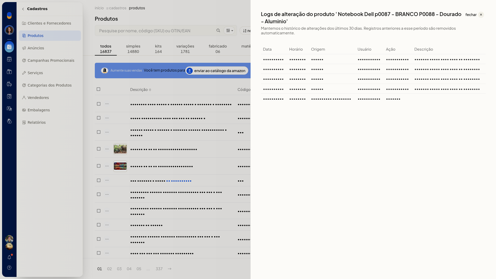

Logs de produtos
Pré-requisitos
- Se a opção não aparecer para você, peça acesso ao administrador da conta.
Importante
- São exibidos os últimos 30 dias. Registros mais antigos são removidos automaticamente.
- O painel é somente leitura: não altera o cadastro do produto.
Instruções
-
Acesse Cadastros > Produtos.
-
Abra o menu de ações do produto e clique em Visualizar logs de alteração.

-
Confira a tabela pelas colunas Data, Horário, Origem, Usuário, Ação e Descrição.

-
Clique em Fechar para voltar à listagem de produtos, depois de conferir quem alterou o produto, quando, por qual origem e o que foi feito.
Informações adicionais
- Uma atualização de origem Manual pode trazer a descrição Produto salvo pela tela de cadastro.
- Uma criação de origem Integração ecommerce pode aparecer com a descrição vazia.